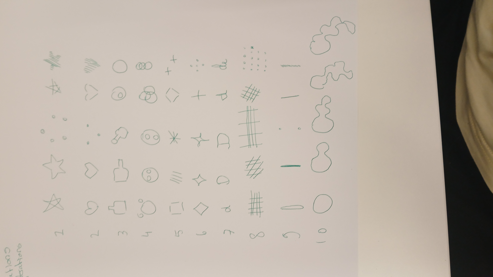
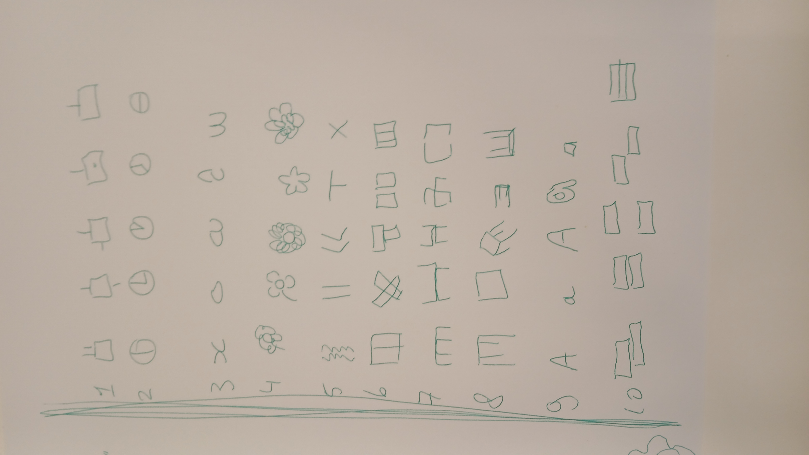

Assignment
Prototyping, sept 2026
Draw 5 variations, and 10 itterations, of anything. (Done twice)
Tags
warm-up drawing doodle sketch Prototyping
Draw 5 variations, and 10 itterations, of anything. (Done twice)
warm-up drawing doodle sketch Prototyping
It's a lot of looking around me and seeing what shapes I could simplify, and how I could change them. I like playing with the very basics of what makes it a shape, and mainly rotating or shifting those basics. I'm glad to have achieved 50 shapes both times, that did not seem feasible to me when it started.

